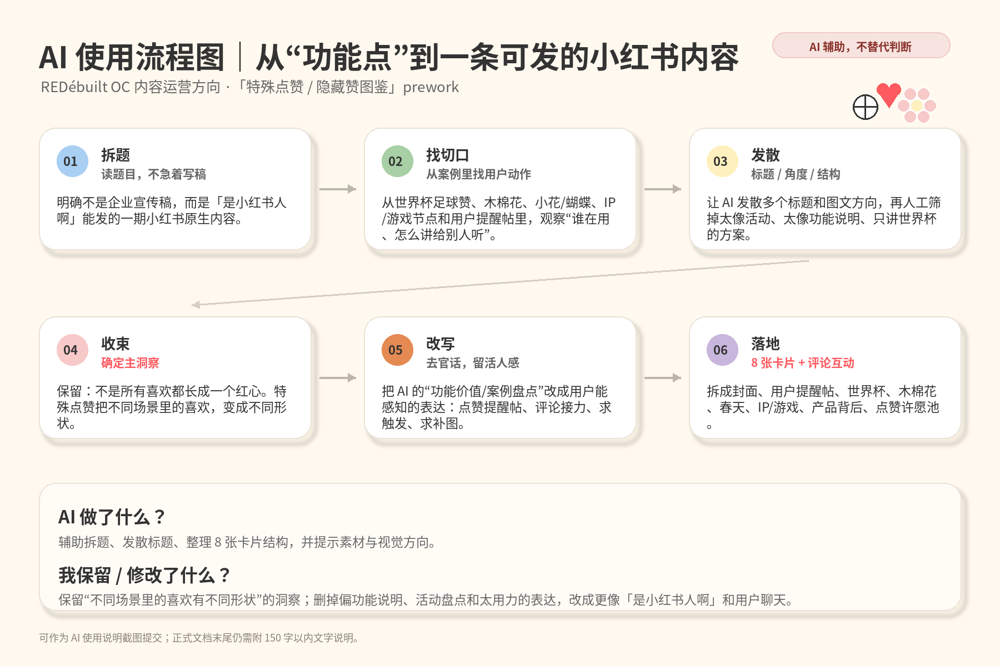
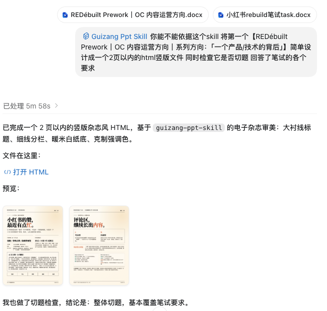

“点赞”确实不是多“大”的功能。不过，有些小交互会让人从习惯性的机械点赞里暂停片刻。如果你觉得某些特效有点打扰，也欢迎吐槽；要是你点到过更好玩有意思的，也欢迎在评论区分享～
一个产品 / 技术的背后
让不同场景里的“喜欢”有不同形状。不是讲一个按钮更新，而是讲一个小交互如何被用户发现、转述，又长成新的社区内容。
Topic & Title
Format
它更像一次“发现—考古—串联—洞察—共创”的滑动式阅读。每张图只讲一个点，适合用户在评论区补图、补案例、许愿新的点赞形状。
补充展示：可翻页隐藏赞图文 demo https://redebuilt-oc-hidden-like.netlify.app选择《小红书的赞，最近有点忙》，是从大家正在刷到的一个小发现切入：怎么这个赞突然变了（变成了世界杯的足球）？谁点到了？还能不能再点一次？“赞，最近有点忙”有一点拟人感，也有一点活人感，不像在讲一个按钮更新，更像「是小红书人啊」和大家聊天的语气。
它也不只绑定世界杯一个案例，可以继续承接足球、木棉花、小花、蝴蝶、IP/游戏节点等不同场景里的特殊点赞。而且“赞”作为一个日常已经习以为常的线上动作，也或许能从寻常中看见“不寻常”的互联网上的“附近”。这个标题还能自然打开评论区：用户可以接着问“我也点到了”“这个怎么触发”“还有没有别的隐藏赞”。
小红书的赞，最近又忙起来了。我们刷到好多“点赞提醒帖”：有人说双击屏幕有惊喜，有人问怎么触发，有人专门求截图——
“真的有，快去点。” “看看我有没有点赞成功？”一个很小的点赞特效，突然被大家讲成了一条新线索。
世界杯进行时，红心换上了球衣；《给阿嬷的情书》，木棉花的勇气再次绽放；春天的花与蝶，是“季节到了”的那一秒；游戏更新、电影上映这些节点里的特殊赞，像你我的会心一笑：原来不止我在期待，也不止我一个人在上头。
点赞彩蛋可能藏在小红书的各种地方。当然，因为不一定熟悉触发条件，大家才会互相提醒：带什么话题？在哪儿点？谁有点赞截图？
彩蛋被发现以后，又长出新的内容。把它们留作素材，把“我点到了”当成一次颇有成就感的参与，甚至会把点赞特效保留下和同好们分享。
特殊点赞不只是“图标变了”，或“这好有意思”，而是一个看似不起眼的交互怎么接住大家，又被大家接住。不是所有喜欢都一定要长成一个“红心”。看球的喜欢、被故事打动的喜欢、春天路过的喜欢、同好相认的喜欢，本来就不太一样。
我们希望这样的交互，不只让惊喜做大，而是让它出现得“刚刚好”：在你已经想表达喜欢的那一秒，换一种“惊喜在场”的方式托住独属于你的心情。
运营互动
你们还点到过哪些隐藏赞？欢迎在评论区分享你的“惊喜赞”，我们想整理一份「小红书隐藏赞图鉴」，补充你们的“喜爱”瞬间，也可以适当给出一些奖励。
如果可以开发一种新的点赞功能，你希望它出现在什么样的场景中呢？比如毕业季学士帽、演唱会荧光棒、宠物小爪印，或自定义。也可以考虑点赞图标动效设计大赛。
第一个钩子能让用户补充真实案例，让评论区继续长出内容。第二个钩子能把用户从“看彩蛋”带到“想象一个小细节还能怎么做”。它们都不需要用户参加很重的活动，只是顺手留言、顺手补图，符合小红书原生的评论区接力。
「点赞图鉴」：把评论区用户补充的案例整理成下一期轻量图鉴，按公共事件、内容故事、季节日常、兴趣同好、用户许愿分类。「点赞特效比赛设计」：以比赛形式调动用户兴趣和主观能动性。
我用 AI 辅助拆题、发散标题、整理 8 张卡片结构，并把语言从功能说明改得更像小红书聊天。保留了“不是所有喜欢都长成红心”的洞察，删掉了偏说明书的表达。

